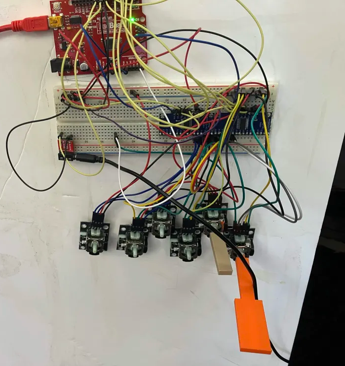
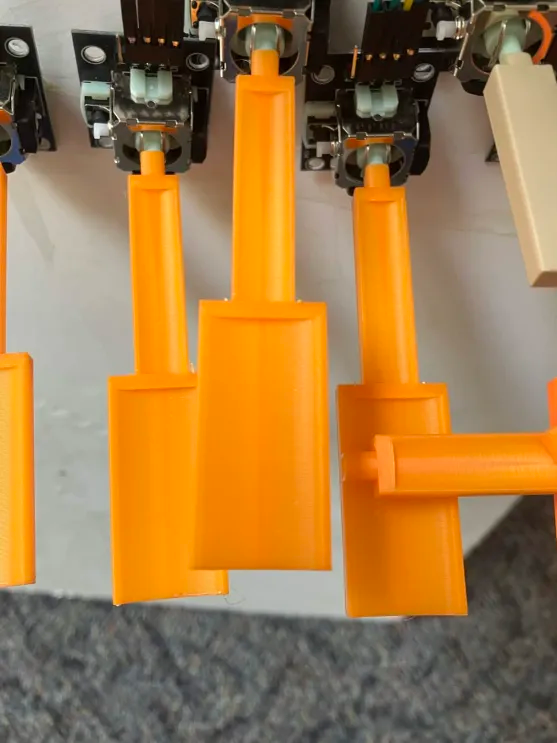
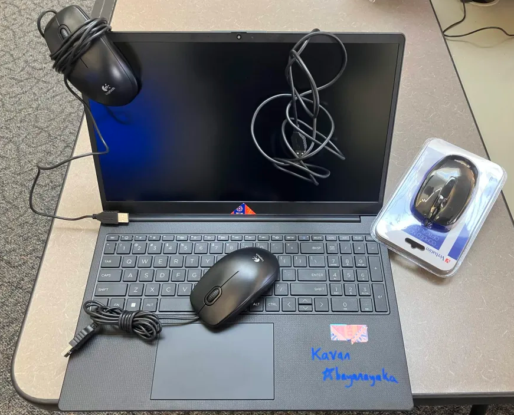

We got the MUX board working (and a second one working, too, to prepare when more joysticks finally come)
before taping the whole setup to a styrofoam board for a playable-ish prototype.


I also printed some new keys with divots/concave surfaces to make the key grippable when moving it side-to-side so that
the signature
whammy feature isn't too dificult to perform. I printed the new keys at the end of the day
on Friday, so we haven't taken the instrument for a proper spin yet. I'm excited for that.
The first half of Friday was spent doing a little bit of setup for CodeWars (programming competition hosted by HPE),
which was happening the next day
(a.k.a this morning as of writing this!). I brought my laptop to school to test things out (as it was the device
we used to program on for CodeWars [also, I've noticed that I'm using a lot of parentheses here]).

As you can see, my laptop was TPed by the abundance of extra mice in our Computer Science classroom.
I'd say the competition went pretty well, we got 36 points. We would've tied for 2nd place if we were in the novice
division, but alas, we were in the advanced division. Still, I'm pretty happy that we did decently after a
a single day of practice.
Also, it's a shame that no one from our school won the raffle for a laptop. I got lucky and won last year, giving me
the very laptop that we used for the competition this year!